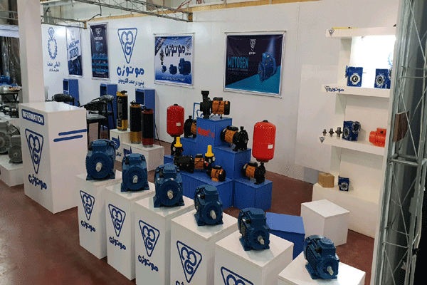

درباره ما
طرح اولیه ایجاد یک شرکت بازرگانی با نام ماناموتور با دو هدف عمده کمک به توسعه صنعت کشور و همچنین کمک به مخترعان و مبتکران طرح های صنعتی در سال 1392 پی ریزی شد و به سرعت به عنوان یکی از بزرگترین سایتهای مرجع تخصصی مشاوره و خرید انواع الکتروموتور و تجهیزات آن در ایران مطرح گردید.
پس از تهیه مکان مناسب و خرید امکانات سخت افزاری و نرم افزاری مورد نیاز، در تابستان سال 92 ماناموتور رسما آغاز به کار کرد. اولین محصولات ماناموتور برای فروش عبارت بودند از انواع موتور های DC و AC که به مشتریان عرضه شدند.
در سال 94 که ماناموتور با استقبال صنعت کشور مواجه شد و به دنبال آن افزایش شدید در فروش محصولات را در پی داشت، بر اساس اهداف شرکت محصولات بیشتری از جمله انواع گیربکس، جک خطی، سرو موتور و استپر موتور به سبد محصولات شرکت اضافه شد و به زودی انواع پمپ، فن و ژنراتور نیز به این سبد اضافه خواهند شد.